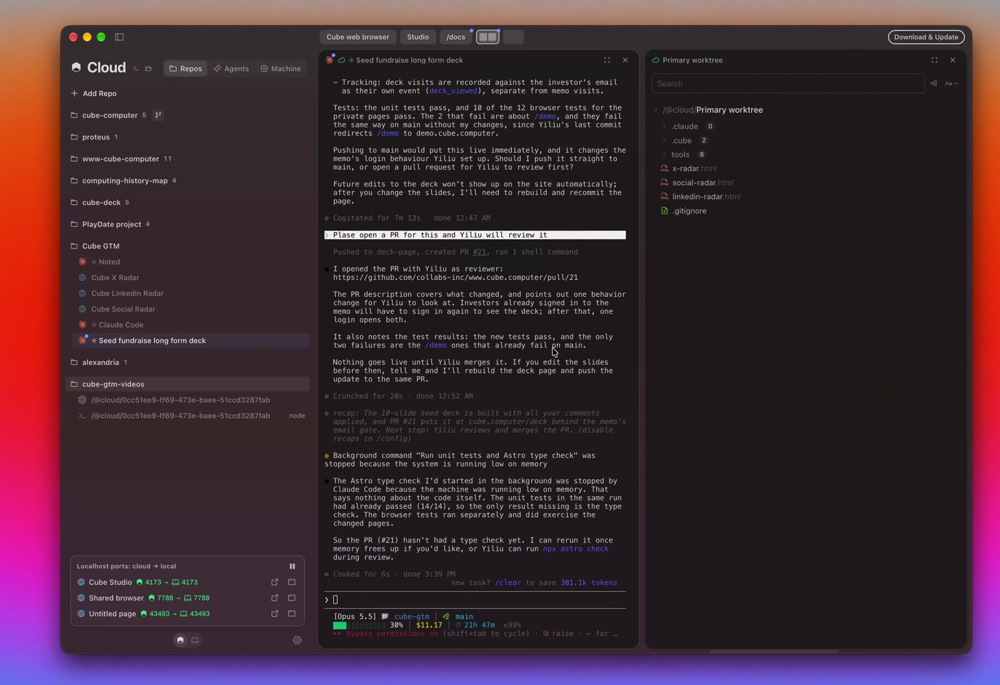
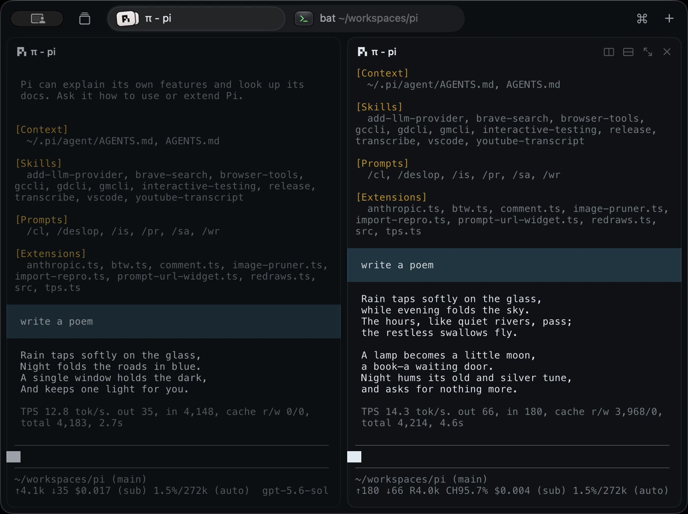
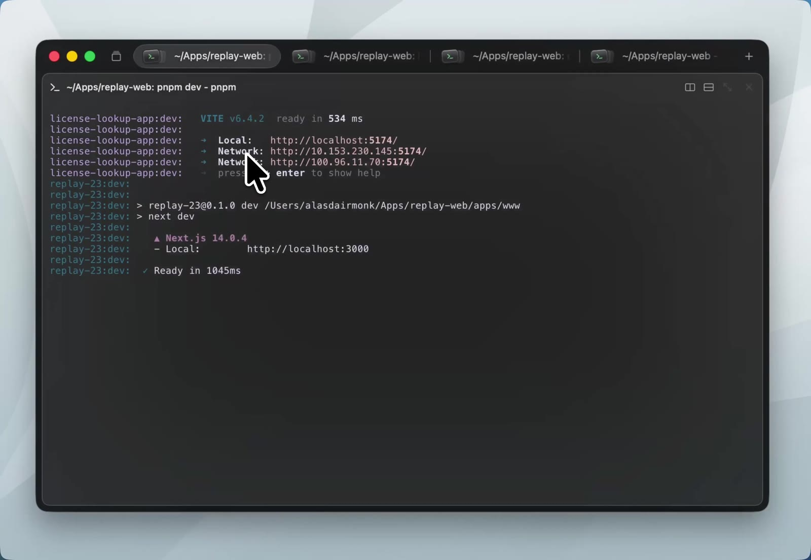
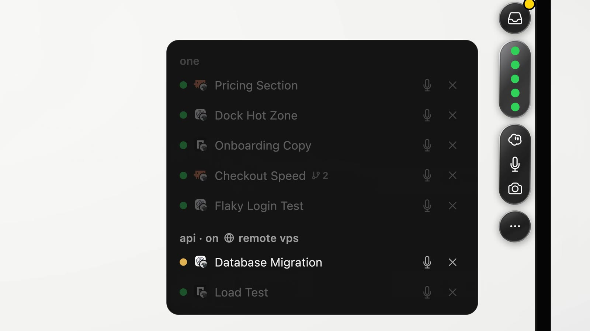

Oriel
A native Apple client for terminal multiplexers: herdr first, and the only backend for now. The multiplexer stays the backend: it owns every workspace, tab, pane, terminal and agent. The app draws them, drives them, and keeps as little state of its own as it can.
This page is a summary. The full design is in the design docs.
The problem
People run many coding agents at once, often on several machines. herdr keeps them alive and knows when each one is working, blocked or done. But its interface is a terminal UI: one machine at a time, keyboard-first, and nothing when you are away from the terminal or on your phone.
What we build
One app for Mac, iPad and iPhone that shows every herdr machine at once: a sidebar of machines and agents, a swipeable strip of tabs with resizable panes, terminal, agent, web and plugin panes, a chat view for agents and terminals, and status pills on the Mac screen edge. Terminal, agent and web page are built in; every other pane kind is a plugin, a small web page.
1Machines, tabs and panes
A flat sidebar of machines, workspaces and tabs, tab capsules in the title bar when the sidebar is hidden, and a strip that pages sideways through tabs. Try it.
Try: scroll the main area sideways (trackpad or shift+wheel); the selected row follows the page. Hide the sidebar with the button at the top left: the tabs move into the title bar as capsules, every tab whose page is visible lights up, and the glass marker follows the scroll. Scroll the sidebar sideways, click the dots, or pick a session from the session button to switch machines. Hover a card for its controls. Press Open :3000 on the dev server card to open its web card. The diff and history tabs are plugin cards: small web pages. On devbox, the staging card was built from the machine, so it asks first: press Open. lab-mac needs a password, so it shows Reconnect.
Machines
The app keeps its own list of machines, on the Mac and on iOS. On a Mac with herdr, the Add Machine sheet lists herdr's machines. All connect at once; one sidebar page per machine, swiped sideways like Arc's spaces.
Status everywhere
◔ working, ▲ needs you, ✓ finished, on sidebar rows, tab capsules and the status area. The status area covers every machine.
Panes
Panes follow herdr's split layout. Drag dividers to resize, zoom a card to fill its page, drag cards to swap, split or move them. Paste an image into an agent or terminal card: it goes to the pane's machine as a file, and its path is pasted.
2Pane kinds and plugins
Terminal, Agent and Web page are built in: fixed rows in the pane picker. Every other pane kind is a plugin, a small web page. Git history, Diff and Markdown are core plugins that ship with the app and use the same bridge anyone can use.
Web page
Any address, next to your terminals. A remote localhost:3000 opens as localhost:3000 on your device, through the SSH connection. When a terminal prints a local address, its card shows an Open :3000 chip.
Your own plugins
A small web page (HTML and JavaScript) in a native web view, with a bridge to oriel.run(argv) and oriel.dial(host, port) on the pane's machine. On iOS, v1 ships only the core plugins. Install from a git URL or link a folder for live reload.
Restored from herdr
Every plugin pane is a real herdr pane with a label like oriel:git-history#k3f9q2 main. A fresh app on any device rebuilds it from that label.
Full detail → Pane kinds and plugins · Web page
3Chat view
Switch any agent or terminal pane between its terminal and a chat view. Agents show their own transcript. A blocked agent shows its prompt with answer buttons.
- Messages come from the agent's own transcript file (pi, Claude Code, Codex), tailed live on its machine.
- Replies go to the agent's input. A reply never answers an open prompt by accident.
- Answer buttons send a key only if the agent is still blocked and the prompt is unchanged.
- Other agents and every terminal pane get a "screen text" chat, so any agent or terminal pane can switch. Web and plugin panes have no chat view.
- Paste an image (⌘V) into an agent or terminal card: the app uploads it to a temporary file on the pane's machine with
run, then pastes its path (into the draft in chat).
Full detail → Window (the chat card) · Chat view
4Floating pills (macOS)
While you work in another app, a black pill on the screen edge shows a glyph per agent. A blocked or finished agent opens a small card with its output and a reply box, without taking your keyboard.
Try: click the pill on the right edge to open the list, then click a row to open that agent's card. Press a simulate button: the card peeks out without taking focus and shrinks back after 8 s if the pointer never enters it. On a peeked card the first click only activates it; the next click sends the key. Mark seen clears a finished agent's ✓.
Full detail → Floating pills
5iPhone and iPad
iPad in regular width uses the Mac layout. iPhone, and iPad in compact width, show one pane per page, open agents in chat, and have a key bar for terminals.
- One chip per pane, in tab order; "|" separates tabs.
- Tapping the title opens the machine and workspace switcher.
- The status area is a bar under the navigation bar.
- Agents open in chat, which needs no terminal stream.
- No push in v1: the phone shows status while the app is open.
- A terminal view opens as a watcher (
observe), so looking never resizes the pane. The first key press, paste or tap in the card takes control.
Full detail → iPhone and iPad
6Inspirations
Cube Computer for the sideways strip, Superlogical Rex for quiet tabs, Arc for machine pages, and One for the floating agent pill.


| From | We take |
|---|---|
| Cube | the sideways strip of tab pages; tabs lit while visible; web pages as panes; a sidebar tree with kind icons |
| Rex | status inside the tab; × on hover; dimmed unfocused panes; glass on chrome only |
| gorex | the reference implementation for Rex-like behavior: capsule tabs that shrink and fade their labels on overflow, an 8 pt gap between cards that is the divider, header controls on hover, dimmed unfocused cards, one tab status slot (× > ▲ > ✓ > ◔), a static working glyph, double-click a divider to reset it to 0.5, ⌃⌘= to equalize, a window title that follows the active tab. It draws everything with its own Metal renderer, so it is not a reference for glass or SwiftUI. |
| Arc | one sidebar page per machine, swiped sideways |
| One | the edge pill with a glyph per agent; a card with the agent's output and a reply box |
More frames






Lessons from about 25 existing herdr clients
| Lesson | Evidence |
|---|---|
| Clients that keep their own model of tabs or layout drift from herdr. | herdrm, paca, moo, allward; bigtty mirrors herdr and stays small |
| herdr's private client socket breaks on herdr upgrades. | whip, uHerdr and rai pin protocol 22 |
herdr terminal session control is the public way to stream one pane. | bigtty, paca, termote, pairfob |
| Chat views read the agent's own transcript file. | herdr-web-ui, collie, termote |
| Parsing approval prompts per agent costs a lot to maintain. | herdr-web-ui has 27 regex responders |
| Daemons on the machine add install steps; SSH already does auth. | herdr-connect, pairfob, collie vs Heeler and herdr itself |
| Glass behind terminal text hurts reading. | paca removed it after two days |
| libghostty draws terminals better than SwiftTerm on iOS. | Heeler measured both |
Full detail → Inspirations
7UI details
How each part looks and behaves. The sections after this one explain how it works.
Window, sidebar and tab bar
- Title-bar row: the sidebar toggle, the session button (the session's name; it opens the list of sessions, grouped by machine), the tabs while the sidebar is hidden, ⌘ (the palette) and
+(new tab). - Sidebar: flat on the window background, with no panel. The machine pages (swiped sideways, each headed by the machine's name in a small line), fixed page dots, the fixed status area, and at the bottom a Filter field, New Workspace and Add Machine. A machine page for a non-default local session is named "This Mac · ‹session›".
- Machine page: herdr's workspaces in herdr's order, as section headers, with their tabs as rows (icon tile, label, status glyph). The selected tab is a raised pill. Later a workspace also lists its agent panes (icon, name, glyph and word). Clicking a workspace selects it in the app only.
- Tab bar: while the sidebar is hidden, the title-bar row shows one capsule per herdr tab, and one glass marker follows the strip as it scrolls. Each capsule has the icon of the pane last selected in it and the tab label (folder part dimmed). One status slot per capsule shows one glyph by priority: × on hover, then ▲, then ✓, then ◔. The ◔ glyph is static (no animation). When tabs overflow, they shrink and their labels fade out.
+makes a new tab. The window title follows the selected tab. - Strip: one page per tab. Cards follow herdr's split tree, with an 8 pt gap between cards that is the divider. Double-click a divider to reset it to 0.5; ⌃⌘= equalizes the tab's splits. Each card header has the kind icon, title, view switch (chat|term on agents and terminals, plugin|term on plugin panes, none on web pages), split, zoom and close. Plugin and web cards also have Refresh, which loads the card again from the machine. Controls show on hover on macOS and always on iOS; every action is also in the context menu, the menu bar and ⌘K. Unfocused cards are slightly dimmed.
- Swiping: two fingers on a trackpad, one finger on iOS; pages snap. First visit to a machine shows herdr's focused workspace; later visits show the last one picked.
- Keys: ⌃⌥1…9 machines, ⌘1…9 tabs, ⇧⌘[ ] step, ⌘T new tab, ⌘D split, ⌘W close the pane, ⇧⌘W the window, ⇧⌘↩ zoom, ⌃⌘ + arrow resize, ⌃⌘= equalize, ⌘K the palette (tabs, workspaces, sessions).
- Closing: closing a pane asks first unless the pane runs only its shell (no foreground program). Closing a tab or workspace always asks.
Drag and drop, zoom
| Drop a card on | Result |
|---|---|
| the center of a card in the same tab | swap the two panes |
| an edge of a card in another tab | split there |
| a tab capsule (hold to page to it) | move into that tab |
| a sidebar workspace | new tab there |
| empty sidebar space | new workspace |
- The card menu has the same moves (Move to ▸); that is the only path on iPhone. A pane cannot move to another machine.
- Zoom: the zoom button, a double-click on the header, or ⇧⌘↩ makes the card fill its tab's page, as if it were the only pane. The same again restores it. Esc is not used, because the program in the pane needs it.
Full detail → Drag and drop · Window (zoom)
Pills
- Pill: a black notch-shaped tab on the right screen edge, vertically centered, with one glyph per agent across all machines, in a stable order. Idle agents get no glyph; with nothing running it shows one gray dot. If more than 10 agents are not idle, it shows 9 glyphs and a tenth that reads "+n" (n agents not shown). One pill with a glyph per agent, not a pill per agent: ten agents would be ten capsules.
- Pill list and pill card: click the pill for the list, grouped by machine and workspace; rows never reorder. Click a glyph or row for the agent's pill card: its last messages (or screen text), the prompt and key buttons when blocked, a reply box, Mark seen, Open in app, ✕.
- Peek: a newly blocked or finished agent's card slides out without taking the keyboard and shrinks back after 8 s unless the pointer enters it. The first click on a card only activates it. Esc closes, ⌘↩ opens the app. Opaque near-black, no glass. A Peek switch in the pill's context menu and a setting turn peeks or the pill off.
Full detail → Floating pills
Add a machine, theme and accessibility
- Add a machine: the app saves the SSH target in its own list, on the Mac and on iOS. On the Mac, the Add Machine sheet lists herdr's machines (
herdr machine list) not added yet; when the app's list is empty, the sheet opens with them checked. iOS shows the public key to copy intoauthorized_keys. herdr on the Mac is needed only for This Mac's sessions. - Theme: dark only, frosted. The window is one behind-window blur under a dark tint; pane cards are translucent with a hairline border; the sidebar sits flat on the window; Liquid Glass only on the tab marker, popovers and the palette. Terminals use a dark palette; web pages are told
prefers-color-scheme: dark. iOS uses the same look. Status colors: ◔ working blue, ▲ needs you amber, ✓ finished green. - Accessibility: status is always a glyph plus a word, never color alone. Terminal cards expose their screen text to VoiceOver (from
pane.read visible, on demand) and announce new output politely. Keyboard focus moves sidebar → tab bar → cards (left to right, top to bottom). Every card action is reachable from the keyboard (⌘K). Every swipe has a keyboard path, a menu path and a button. The chrome supports Dynamic Type on iOS, and the terminal font size follows the app's text size setting. Reduce Motion turns off page animations (the strip jumps to a clicked tab) and the pill's slide.
Full detail → Add a machine · Theme and accessibility
States
| State | What the user sees |
|---|---|
| Connecting | a spinner on the machine page |
| herdr not installed on this Mac | install instructions on This Mac's page; remote machines still work |
| herdr missing on a remote machine | the install command |
| herdr older than 0.9.3 | "herdr 0.9.3 or newer is needed"; before 0.9.1 (no remote-api-bridge) "No answer from herdr" |
| herdr updated but not restarted | "Restart herdr on ‹machine›" (terminal streams fail; the API works) |
| herdr server not running on This Mac | "‹session› is not running", a Start button (a launchd job) and the command to run in a terminal |
| herdr server not running on a remote machine | a Start herdr button |
| SSH auth failed | ssh's message in plain words |
| Host key changed | the connection is blocked and the fingerprint is shown |
| Local Network access denied | where to allow it in System Settings › Privacy & Security |
| Connection lost | cards gray out; the app retries every 2 s without prompts, then reads a fresh snapshot |
| Reconnecting needs a password or code | Reconnect; only this button may prompt |
| No SSH session left on the connection | the card shows its last image and Retry |
| Pane in use on another device | the content (watching) and "In use elsewhere · Take back" |
| New tab or split | the pane picker; herdr is called only after a pick |
| Agent did not start (10 s) | "Agent did not start" and the last screen lines |
| Move refused by herdr | herdr's reason in words |
| Web page failed | WebKit's error in the card |
| Web address from the machine, origin not approved and not on the safe list | "Open ‹url›?" with an Open button |
| Plugin not installed on this device | the plugin id, the argument, Show placeholder (switch the card to the pane's terminal), Close pane; on macOS also "Install from ‹source›…", marked "Suggested by ‹machine›" |
| Plugin not responding | "‹title› is not responding · Refresh" |
| Full chat not available | the screen-text chat, with a tooltip that says why |
Full detail → States
8Architecture
Views read from one HostStore per machine. Each HostStore talks to its multiplexer through one interface, Multiplexer: herdr is the first and only implementation; Rex and tmux are candidates. Commands reach the machine through one tiny protocol, Exec. Plugin cards are web views with a bridge to run and dial.
App · SwiftUI · macOS + iOS
Exec.run(argv) → stdin / stdout · Exec.dial(host, port) → a TCP streammacOS · ProcessExec(prefix)
[]remote: [ssh -F /dev/null … -S ctl target --]dial: ssh -O forward -L / ssh -WiOS · CitadelExec
direct-tcpip channel per dialMachine · herdr + standard tools
herdr remote-api-bridge → herdr.sockherdr terminal session control → framestail -F → chatgit, cat → plugin data| Piece | Platform | Job |
|---|---|---|
Multiplexer | both | the interface every multiplexer implements: machine connection, a snapshot of workspaces, tabs, panes, layout and agent status, events, terminal streams, actions. Herdr in HerdrKit is the one implementation. A deliberate exception to "no interface with one implementation" |
HerdrKit | both | Exec, call(), events, snapshot decoding, split-tree rebuild, label parser, transcript parsers, the remote command envelope |
ProcessExec / CitadelExec | macOS / iOS | run a command or dial a port, locally or over SSH |
HostStore | both | one per machine: snapshot, events, streams, seen state |
PaneViewRegistry | both | owns terminal views, web pages and plugin cards, so scrolling never destroys them |
PluginRegistry / PluginHost | both | manifests and consent / a web view per plugin card and its bridge to run and dial |
Full detail → Architecture
9Talking to herdr
Two calls per machine: run a command and talk to its stdin and stdout, or dial a TCP port as seen from the machine. Requests use herdr's own remote-api-bridge; live panes use terminal session control.
The two calls and the remote command envelope
protocol Exec {
func run(_ argv: [String]) async throws -> Channel
func dial(host: String, port: Int) async throws -> Channel
}
# every remote command, whatever the login shell (bash, zsh, fish):
sh -c 'eval "$(printf %s "$1" | base64 -d)"' sh <BASE64 of the POSIX command>- This Mac:
Process, withPATH,SSH_AUTH_SOCKandXDG_*read once from$SHELL -lic(3 s timeout, parsed after a marker).HERDR_*is removed from children. herdr's usual install folders are in front ofPATH, so the app never looks for herdr: a missing herdr fails the first call and the app shows the install command. - Remote on macOS:
ssh -F /dev/null -o ControlMaster=no -o BatchMode=yes -o ProxyCommand=/usr/bin/false -S <ctl> <target> --, which never opens a second connection. iOS: a Citadel exec channel. - Base64 passes through every shell unchanged, so no data is ever pasted into a shell string.
- Ending a child = closing its stdin.
controlexits at once and frees the pane; the bridge exits in about 100 ms. If the app crashes, the kernel closes the pipes and every child ends itself, remote ones too. Commands that ignore the end of stdin (observe,tail -F) always run insidesh -c '<cmd> & c=$!; cat >/dev/null; kill $c', on This Mac too. If a child still runs about 1 s after the close, its channel kills it by pid (never by process group). - Every
call()has a 10 s timeout. Long-lived streams have none; the health check covers them. - herdr older than 0.9.1 has no
remote-api-bridge, so the first call fails and the app says "No answer from herdr". A snapshot that reports a version below 0.9.3 shows "herdr 0.9.3 or newer is needed"; a newer protocol needs nothing. Every herdr argv carries--session.
Requests and events
call()runsherdr --session S remote-api-bridge, writes one JSON line, reads one reply (herdr answers one request per connection). 18 ms median, 130 ms p95 locally, plus network.- One long-lived bridge per machine carries
events.subscribe: workspace, tab, pane and layout events listed explicitly (no wildcards), status events only for agent panes, no focus events. - Any event means "read the snapshot again"; the app decodes no event payload. One
session.snapshotis in flight per machine. An event during a read sets a read-again flag, so one more read follows. The event stream stays; polling was rejected. - The stream is reopened, then a snapshot read, when agent panes change, on
events_lostand onpane_not_found. - One health check per machine: the snapshot read is the heartbeat. It carries herdr's version and catches missed events. Every 30 s while healthy, every 2 s while failing. Automatic retries use
BatchModeand never prompt; a host that needs a password or a one-time code shows Reconnect. - Snapshots are applied to stable observable objects. Ids are scoped by machine.
Live panes and who controls them
herdr terminal session control <terminal_id> --cols C --rows R [--takeover]
stdout → {"type":"terminal.frame","width":C,"height":R,"full":true,"bytes":"<base64 ANSI>"}
stdin ← terminal.input (text) · terminal.resize · terminal.scroll · terminal.mouse
close stdin → the stream ends and frees the pane
herdr call pane.send_keys ← special keys and Ctrl chordsopens
control, types and resizes; the phone opens observe or uses chaton the phone or iPad (
--takeover) →← first key press, paste or tap on the Mac, or Take back
the Mac watches: "In use elsewhere · Take back"
Streaming rules and how a stream ends
- Streams: the selected tab's panes on the selected machine; the Mac keeps those of recently shown tabs too (about 24 terminals). Channels open when needed: when the machine refuses one, the app closes the least recently shown kept stream and tries once more; then the card shows Retry. During a swipe, neighbor tabs show each card's last image; their streams start when the swipe stops.
- The Mac opens
controlwithout takeover and watches if refused. iPhone and iPad openobserve. Any device takes control (--takeover) on the first key press, paste or tap in the card, or Take back. Nothing else takes control: a watcher stays a watcher until its user acts. - A Mac that becomes inactive keeps its streams. iOS closes its streams when the app goes to the background. A device also closes a stream when it leaves the terminal view (the card leaves the selected tab, or switches to chat).
- Typed text goes through
terminal.input; special keys and Ctrl chords go throughpane.send_keys. Asking herdr to accept keys onterminal.input, for one path, is future work. - Card size ÷ cell size gives cols × rows; the old frame stays until herdr's full frame at the new size arrives. Streams are opened by
terminal_id, so they survive moves. - An iPhone watches at a fixed 160×50, scaled to fit, because herdr does not report PTY columns.
- Terminal queries: herdr already answers them, so libghostty must not. The app uses a pinned libghostty-spm build with the response-suppression patch (uHerdr's
suppressesTerminalResponses).
| Reason contains | The app |
|---|---|
already has an attached client | watches; shows Take back |
taken over | watches; never takes back by itself |
not found / exited | drops the card; waits for the snapshot |
detached | does nothing (it closed the stream) |
live update | opens the stream again after 1 s |
| handshake error (exit 1) | "Restart herdr on ‹machine›" |
Writes: every user action is a herdr call
| Action | herdr call |
|---|---|
| New workspace / tab / split | workspace.create / tab.create / pane.split (with the source pane's cwd) |
| Drag a divider | layout.set_split_ratio on release, 0.1–0.9 |
| Double-click a divider / ⌃⌘= | layout.set_split_ratio 0.5 / each split's ratio from the leaf counts on each side |
| Keyboard resize (⌃⌘ + arrow) | pane.resize |
| Start an agent | agent.start {name, kind, pane_id}, retried while the shell is busy |
| New web or plugin pane | layout.apply with a pane node {label, cwd, command} in a new tab, then pane.move into place. Never with tab_id, which replaces the whole tab and kills its panes. |
| Swap / move | pane.swap / pane.move; changed:false shows herdr's reason |
| Reorder / rename | tab.move, workspace.move / *.rename |
| Close | *.close. A pane asks first unless it runs only its shell (checked with pane.process_info). Web and plugin panes close without asking. A tab or workspace always asks. |
Every create and move uses focus:false. The app waits for the event and snapshot; it never patches its own state. It never calls herdr's focus methods or pane.zoom.
Full detail → Talking to herdr
10Machines and SSH
The app keeps its own machine list, on the Mac and on iOS. On the Mac, SSH is the system ssh; on iOS it is Citadel.
macOS
The app's own machine list, as on iOS. When herdr is installed on this Mac, the Add Machine sheet lists its herdr machine list entries not added yet, checked when the app's list is empty. herdr on the Mac is needed only for This Mac's sessions (herdr session list). One ControlMaster per host, started on purpose, so there is one prompt per host. Agent and X11 forwarding are off; dial adds port forwards when needed. A bundled askpass script shows password prompts.
iOS
Machines in UserDefaults. A Secure Enclave key that cannot leave the phone. Host keys pinned on first use. The Mac is reached like any machine through Remote Login, over LAN or Tailscale.
A machine is one herdr session, so it is one entry in the machine list. Two sessions on one host share one SSH connection (ControlMaster), its channel limit, and nothing else: each session has its own events, streams and plugin state cleanup. A non-default local session is named "This Mac · ‹session›".
ssh -M -N -f -o ControlPersist=10m -o ServerAliveInterval=20 -o ForwardAgent=no -o ForwardX11=no \
-o ClearAllForwardings=yes -S ~/Library/Caches/oriel/<h8> devbox # start once
ssh -S ~/Library/Caches/oriel/<h8> -O check devbox # wait for it
ssh -F /dev/null -o ControlMaster=no -o BatchMode=yes -o ProxyCommand=/usr/bin/false \
-S ~/Library/Caches/oriel/<h8> devbox -- sh -c '…' sh <BASE64> # later runs: no fallback, no forwardsDetails
<h8>is 8 hex characters of a hash of the SSH target, so the socket path stays under the 104-byte socket limit for user names up to 50 characters, with ssh's 17-character temporary suffix. The folder is per user, mode 0700.- Local Network privacy (macOS 15+): the app declares the usage string and opens an
NWConnectionto a LAN address first, so the system asks once. - All machines keep their control plane open; only the selected machine streams terminals. OpenSSH allows 10 sessions per connection (
MaxSessions). The app opens channels when needed and counts none: when the server refuses one, it closes the least recently shown kept stream and tries once more; else the card shows Retry. - Health check: one per machine. The snapshot read is the heartbeat: every 30 s while healthy, every 2 s while failing. Automatic retries use
BatchModeand never prompt, so a host that needs a password or a one-time code shows Reconnect. - Checks on connect, two steps: the snapshot (it carries herdr's version), then events.
integration.listruns when the picker opens. If the server is not running: on a remote machine, Start herdr runsnohup herdr --session S server &over SSH. On This Mac, Start runs the server as a one-shot launchd job, so launchd, not the app, is its parent and its "responsible process" (macOS privacy prompts never name Oriel). The job gets the environment the app's herdr calls see (with the user's ownPATHorder), so server and CLI agree on paths. - iOS closes its terminal streams when the app goes to the background. It keeps the connection for about 30 s, then reconnects and re-reads the snapshot on return.
Full detail → Machines and SSH
11Layout and sizing
herdr owns the split tree and its ratios. The app rebuilds the tree from the snapshot, draws it, and sends a new ratio when you let go of a divider. The app stores no sizes.
"panes":[ p1, p3, p2 ], // depth-first
"splits":[
{"id":"split_0_root","direction":"right",
"ratio":0.55},
{"id":"split_1_1","direction":"down",
"ratio":0.50}]├─ p1
└─ split down 0.50
├─ p3
└─ p2
split_<n>_<path>: n is the split's place in the list; path is root or one digit per step from the root (0 = first child, 1 = second). layout.set_split_ratio takes the same path as booleans; the root is [].drag a divider, or double-click it to reset it to 0.5…Zoom, PTY size, selection and "seen"
- If the rebuilt tree's leaf count differs from the pane count, the app falls back to
layout.export. - Zoom is the app's own: herdr's
pane.zoommoves herdr's focus, marks the tab seen and blocks moves. - PTY size: while our control stream is attached, herdr locks the PTY to our card's size. The frame's width and height are the real size.
- Selection lives in memory plus
@SceneStorage. The app never calls herdr's focus methods, because each one moves every attached herdr TUI. - Seen is tracked per agent: the first sighting counts as seen, and viewing the pane records the current
completion_seq. Each device keeps its own seen values: seeing an agent on one device does not clear it on another.
Full detail → Layout and sizing
12Plugin system
Terminal, Agent and Web page are built in. Every other pane kind is a plugin: a small web page (HTML and JavaScript) drawn in a native web view in its card. A bridge gives it two calls on its pane's machine: run(argv) and dial(host, port). The core plugins run on iOS in v1; your own plugins on iOS are future work.
Just the web
Any HTML, CSS and JavaScript the author bundles. No component kit to learn and no build tool from us.
Mac and iOS
A web view works the same on both. Git history, Diff and Markdown are built this way and run on both in v1; your own plugins run on the Mac, and on iOS later.
Bound to its machine
run and dial reach only the machine of the plugin's pane (see Security).
Pane kinds
| Pane kind | Kind | UI | herdr marks the pane with |
|---|---|---|---|
| terminal | built in | native terminal | nothing (the default) |
| agent | built in | native terminal + chat view | nothing (herdr sets pane.agent) |
| web | built in | native web view | oriel:web#<iid> <url> |
| git-history, diff, markdown | core | a web page and the public bridge | oriel:<plugin>[/<pane>]#<iid> <arg> |
| your plugins | installed | a web page and the public bridge | oriel:<plugin>[/<pane>]#<iid> <arg> |
Terminal, Agent and Web page are fixed rows in the picker, drawn natively, so a terminal costs no web view. herdr's own TUI plugins are not part of this system; a pane a herdr plugin opened shows as a terminal.
Agent: when the picker opens, it runs integration.list and lists the entries with available:true. Start = split or new tab, then agent.start (retried every 250 ms for up to 5 s while the shell is busy). No agent after 10 s shows "Agent did not start". The default view is the terminal on Mac and iPad, chat on iPhone.
The TypeScript + React kit drawn as native SwiftUI (Raycast's model) is option (a) in Future work.
Web page and remote localhost
- The pane label
oriel:web#<iid> <url>is the marker: it has no length limit, and it survives moves and restarts. A placeholder process holds the slot. The label keeps the address the user typed; the address after in-card navigation and the scroll position go in the machine's state file (web/<iid>.json), as for plugins. Header: Back, Refresh, Open in browser, Edit address. - When a page loads: a page you create or type loads at once and approves its origin for that machine. A card built from the machine (a fresh start, another device, a card an agent or the herdr TUI made) loads by itself if its origin is approved for that machine or on the safe list. Otherwise it shows Open ‹url›? once, and Open approves the origin.
- Approvals and the safe list are a per-device setting, per machine. The safe list: the machine's own
localhostand127.0.0.1on any port (always), and built ingithub.com,gitlab.com,bitbucket.org,developer.apple.com,developer.mozilla.org,docs.github.com,vercel.com,*.vercel.app,*.netlify.app. You can view and edit approvals and the list in Settings. - A remote
localhost:Pgoes throughdial. On the Mac:ssh -O forward -Lon the ControlMaster, on the same port when it is free, so the page's origin is exactlylocalhost:P. On iOS: an in-app listener on127.0.0.1:Ppipes each connection into a Citadeldirect-tcpipchannel (a TCP stream through the SSH connection). Tailscale addresses load directly. - Open :P: when a terminal prints a local address (the app finds it in the terminal text it already streams for the selected tab), its card shows a chip that opens the address in a web card. The picker's web page entry also lists the machine's listening ports (
ssorlsof), on demand. - One WebKit data store per machine. Loopback is blocked except that machine's own forwards.
The bridge
oriel.run(argv) → runs a command on the pane's machine
oriel.dial(host, port) → a TCP stream to host:port, as seen from that machineAlso on window.oriel: the pane context, setArg, instance state, on("snapshot"), a signal after each snapshot read, with no data (a plugin that needs herdr data runs herdr with run), and preferences. The app never pushes into the page: it sends events only as replies to the page's own bridge calls (oriel.on waits on a pending call for the next signal). To open a link, a plugin uses a normal target=_blank link or window.open on a click, and the app asks first; to copy, it uses navigator.clipboard.writeText. The page is served from the app (oriel-plugin://<id>/).
Every pane kind uses the same two calls: the web page's localhost is a dial, Git history is a run of git. Full detail → Plugin API.
Install and updates
- Plugins live in the app (
Application Support/Oriel/plugins/). Install from a git URL, or link a local folder for live reload with Safari Web Inspector. The app runs no build step. - Updates are checked daily and applied when the user presses Update.
- Cards suspend off screen.
- Preferences are per device (passwords in the Keychain).
Plugin panes in herdr, state, and restore on a fresh start
oriel:git-history#k3f9q2 main ← plugin # instance id, then the argument (what a TUI user reads)
oriel:markdown#q2m0zd docs/DESIGN.md
oriel:kanban/board#7tt1qe ← a plugin with several pane kinds
oriel:web#m4p8sa http://localhost:3000/dashboard- Every plugin pane is a real herdr pane running an inert placeholder command that prints the title, the argument and "shown by Oriel". The app creates it in one call:
layout.applywith a pane node{label, cwd, command:[argv]}in a temporary tab; thenpane.moveputs it in place, and the temporary tab closes itself. The app never types into a shell. It never passestab_idtolayout.apply: that replaces the whole tab and kills its panes. - One card key: every card is keyed by (machine,
terminal_id). The terminal id survives moves. The iid in the label only names the state file. - After a herdr cold restart the pane comes back as a shell with its label and a new terminal id, so its card rebuilds from the label and the state file, as every card does when it is built. The upstream ask (herdr discussion #1367) is an opt-in restore of such panes.
- Bigger state lives in
.local/state/oriel/<session>/<plugin-id>/<iid>.jsonunder the home folder (<session>= the herdr session name) on the pane's machine (a fixed path, so every device finds the same file), written atomically, debounced, last writer wins. - Cleanup: the device that closes a pane removes its state file. On connect, one
find <state dir> -type f -mtime +30 -deleteremoves files nobody wrote for 30 days. - No live follow (D59): a card, web included, changes only when it is built (a fresh start, a new device, the card reopened, or on iOS a card the system discarded) or on Refresh in the card header, which reads the snapshot first and then rebuilds the card. An open card never moves because another device wrote or renamed. The state file is for view state only; data every device must see live stays in files the plugin reads with
run. - A plugin with one pane kind omits
/<pane>.
Security
- One web view per card, bound to its pane's machine.
runanddialgo only there. A content rule and a Content Security Policy keep the page to its own files and scripts (no inline script, noeval; inline styles are allowed). Plugin code runs only while its card is alive; off screen, its calls pause. - Honest about
run: a plugin with it can do anything you can do on that machine, including network tools and programs that keep running. The consent sheet says so. - Open and copy go through WebKit. A
target=_blankclick or awindow.openfrom a click reaches the app, which shows a confirm sheet and opens the address itself; without a click WebKit blockswindow.open. WebKit allowsnavigator.clipboard.writeTextonly during a click or key press. The app never runs script in a plugin page, because WebKit treats such script as a user action. - Every plugin gets
runanddial. Finer rules ("only git") would not hold, so none are offered. - Consent at install, keyed by plugin id and source, in plain words: the plugin can run any command as you on the machine of every one of its panes (including ones others created), use the network from there and leave programs running; on This Mac that includes your files, SSH keys and connections to other machines. One more confirm on a plugin's first
runordialon This Mac, also keyed by id and source. The sheet is headed by the plugin id and source URL, not only the plugin's own title. - An id resolves core first, then a linked folder, then an installed plugin, so a plugin cannot replace a core one. The id
webis taken by the web page's label. - A machine can write labels, so it can open any installed plugin on itself, which gives it only what the plugin does on that machine.
- iOS v1 ships only the core plugins (terminal, agent, web, Git history, Diff, Markdown). Your own plugins on iOS are future work.
Full detail → Pane kinds and plugins · Web page · Security
13Chat view: how it works
herdr knows where each agent writes its transcript. The app tails that file on the machine, turns lines into messages, and replies with agent.prompt.
Details
| Agent | agent_session | Transcript on the machine |
|---|---|---|
| pi | path | that path |
| Claude Code | id | ~/.claude/projects/*/<id>.jsonl |
| Codex | id (a hint only) | the rollout file its process holds open; if none, screen text |
| other agents and terminal panes | – | screen text: pane.read visible every 1 s while shown |
Web and plugin panes have no chat view.
- On open it reads the last 256 KiB. Session changes are re-checked on each snapshot and after each send.
- Send:
agent.prompt(bracketed paste and Enter).agent_blockedandagent_not_readykeep the draft. - Blocked panel: the bottom of the screen and key buttons. A key is sent only if the agent is still blocked and the text is unchanged; otherwise "Prompt changed, not sent".
- The chat|term switch is a control, not a swipe. While chat is shown, the terminal stream is closed.
Full detail → Chat view
14Status, notifications and pills
The status area, notifications and pills all read the same snapshot. "Finished" comes from herdr's completion_seq, so the app sees a finish even when a herdr TUI watches the tab. Finishes that happen while the app is closed are not shown.
completion_seq != null && completion_seq != seen. herdr sets completion_seq when an agent goes from working or blocked to idle, and clears it to null on every other status change, so a finish shows only until the agent works again. herdr's own done is skipped when a herdr TUI is already looking at the tab, and the counter restarts at 0 with herdr.Status comes only from herdr's API. herdr does not support OSC 7501 (a program status protocol) yet (draft PR herdr#5172), and under herdr the app never sees that sequence. Another multiplexer, where the app owns the terminal bytes, may use it.
Notifications
- Blocked: "codex needs you · infra". Finished: "pi finished · api-server", unless you are looking at that pane. The first snapshot after connecting never notifies. A newer notification replaces the older one; seeing the pane removes it.
- macOS: local notifications, and a Dock badge with the number of agents that need you. While the pill shows they are posted as
.passive, except with VoiceOver or Switch Control. - iPhone and iPad: no push in v1. Status shows while the app is open, and in its ~30 s background time. A small stateless relay that forwards encrypted payloads to Apple's push service is Future work.
How the pill panel works
final class PillPanel: NSPanel {
var takesKeyboard = false
override var canBecomeKey: Bool { takesKeyboard }
init(rootView: some View) {
super.init(contentRect: .init(x: 0, y: 0, width: 420, height: 600),
styleMask: [.borderless, .nonactivatingPanel], backing: .buffered, defer: true)
level = .floating
collectionBehavior = [.canJoinAllSpaces, .stationary, .ignoresCycle, .fullScreenAuxiliary, .canJoinAllApplications]
hidesOnDeactivate = false; canHide = false; becomesKeyOnlyIfNeeded = false; hasShadow = false
isOpaque = false; backgroundColor = .clear // ignoresMouseEvents left unset → click-through
contentView = NSHostingView(rootView: rootView)
}
// canBecomeKey is true only while a card is open and clicked; sendEvent turns the first click into "activate"
}- Shown whenever the app is not active. One fixed transparent panel holds the pill, list and card. No SwiftUI scene can do this.
- After a card closes or a reply goes out, the panel orders out and back in, which hands the keyboard back. A tracking area tells the peek where the pointer is.
- The card is the chat view, so it opens no terminal stream and uses the same key guard. Opening a card does not mark an agent seen; Mark seen, a reply or Open in app does.
Full detail → Status
15Data: app vs herdr
A fresh install on a new device rebuilds every workspace, tab, pane, web page and plugin pane from herdr's labels and the machines' state files.
herdr and the machines own
- Workspaces, tabs, panes, order, labels; split tree and ratios
- Terminal content and PTYs; agent kind, status, completion counter, transcript pointer
- Web addresses (
oriel:web#<iid> <url>) and plugin panes (oriel:<plugin>[/<pane>]#<iid> <arg>) - Plugin instance state (a file on the machine)
- Chat history (the agent's transcript)
The app keeps
- Disk: display preferences and pill settings; window restore ids and the sidebar expand state (
@SceneStorage); plugin code, consent and preferences; approved web origins per machine and the safe list; the machine list; on iOS a Secure Enclave key and pinned host keys in the Keychain - WebKit: cookies, one data store per machine
- Memory: zoomed card, chat or terminal per pane, seen values, drafts
- While running: ControlMaster sockets and port forwards
Full detail → Data: app vs herdr
16Platform and code
One multiplatform SwiftUI target for macOS 26 and iOS 26, one main window, and three platform problems solved up front.
① Swipes get eaten
Terminal and web views take every scroll. A macOS NSEvent monitor locks the axis per gesture and gives horizontal motion to the strip; on iOS the terminal yields horizontal pans.
② Lazy views get destroyed
The PaneViewRegistry owns every terminal view, web page and plugin card; only the newest container may hold a view. Caps: ~24 terminals, 6 web views for web pages and plugin cards (2 on iPhone).
③ Shortcuts get eaten
libghostty binds ⌘T, ⌘W and ⌘D. Every surface gets keybind = clear, and keys go to the main menu first.
Tab bar, glass, signing, dependencies, tests
- Tab bar: a row in the hidden title bar's line, holding a
ScrollViewof capsules. The marker is oneglassEffectcapsule that follows the strip's scroll offset; lit tabs come from the same number. gorex is the reference for how the tabs behave (sizes, overflow, status slot, window title), not for glass or SwiftUI: it draws with its own Metal renderer. - Frosted window: one behind-window
NSVisualEffectViewunder a dark tint. Pane cards are translucent with a hairline border. Liquid Glass only on the tab marker, popovers and the palette. Pills are opaque. - macOS: Sandbox off, Hardened Runtime on, notarized Developer ID download. iOS: App Store.
| Need | Choice |
|---|---|
| Terminal drawing | libghostty-spm, exact pin, with the response-suppression patch |
| SSH | system ssh on macOS; Citadel 0.12.1 on iOS |
| Plugin runtime | WKWebView with a WKUIDelegate, one per card, with the plugin's own page |
| Web pages · Markdown | the same WKWebView (SwiftUI's WebView drops window.open) · AttributedString(markdown:) |
One test target checks decoding, the tree rebuild, the lit-tab math, the label parser, the remote command envelope (bash, zsh, fish), the state-file write, the state cleanup, the plugin bridge's machine binding, and the transcript parsers.
Full detail → Platform and code
17Design decisions
Each decision is a rule that holds now, in a sentence or two, with a link to the one page that explains how it works. What we turned down is in its Rejected column.
Full detail → Design decisions
18Risks and known limits
v0 built the SwiftUI strip and the title-bar tab bar. The biggest risks left are the pill panel's focus behavior and the iOS transport. Each gets a spike before real views.
| Risk | Effect | Plan |
|---|---|---|
| A SwiftUI strip with many Metal surfaces | jank, lost gestures | v0 pages with a SwiftUI scroll view; measure it with many terminals |
| herdr updated but not restarted | terminal streams fail; the API works | "Restart herdr" message |
Pane order in layouts[] is not a documented contract | wrong tree | leaf-count check, then layout.export |
| Bridge cost per call | 18–130 ms plus network | one snapshot read in flight; direct socket if a profile says so |
| herdr does not report PTY columns | a phone watcher uses a fixed size | ask herdr for the field if needed |
| A herdr TUI on the same tab | shared ratios; our control pins the PTY size | accepted |
pane.swap marks the tab seen in herdr | TUI users lose a done marker | accepted; swap only follows a drag |
| Transcript formats change | full chat breaks for one agent | lenient parsers; screen text and terminal still work |
| iOS drops connections in the background | no live updates | reconnect and snapshot on return; a push relay is future work |
layout.apply with tab_id replaces the whole tab | the tab's panes are killed | the app never passes tab_id |
| herdr cold restart | web and plugin panes come back as shells with their label | cards rebuild from the label and the state file; upstream ask: herdr discussion #1367 |
| A malicious plugin the user installed | anything the user can do on machines where its panes open, including network use from there | consent sheet in plain words; This Mac confirm; source shown and pinned to a commit |
| Labels written by a hostile machine | a web page or plugin card opening by itself | an origin not approved and not on the safe list needs a click; plugins act only on that machine |
| DNS rebinding against loopback forwards | a page reaches a forwarded dev server by another name | per-machine loopback rules; accepted residual risk |
| The pill panel's focus behavior | the reply box may not take keys, or a click may not open the app | spike S5 |
| Web view memory (120–200 MB each, web pages and plugin cards) | memory growth | caps of 6 on Mac and iPad, 2 on iPhone; evict on memory pressure |
| libghostty-spm and Citadel are third-party builds | updates lag; supply chain | exact pins (libghostty with the response-suppression patch); reviewed updates; SwiftTerm as a fallback renderer |
| Citadel exec channels on iOS (streaming stdin, long-lived channels, channel close) | the iOS transport may not work | spike S7; a thin iOS slice right after remote machines |
| A local forward port is open to other local users | another account could reach the dev server | accepted for a single-user Mac |
Full detail → Risks
19Build order
Prove the risky parts first, then build outward from this Mac.
direct-tcpiplayout.apply, web page with run and dial, the Open :port chip, transcript and screen-text chat, image pastedial listenerlaunch_argv panes upstream, more multiplexers (Rex, tmux), OSC 7501, user plugins on iOS, iOS jump hosts, tab thumbnails, more chat parsers, more windowsherdr calls the app uses (and never uses)
session.snapshot (also the heartbeat and the wait for a started server) · events.subscribe (long-lived)
integration.list (when the picker opens)
workspace.create | close | rename | move
tab.create | close | rename | move
pane.split | close | rename | swap | move | resize | send_input | send_keys | read | process_info
layout.set_split_ratio · layout.export (fallback) · layout.apply (a pane node in a new tab; never tab_id)
agent.start | prompt | send_keys
herdr --session S remote-api-bridge
herdr --session S terminal session control|observe <terminal_id> --cols C --rows R [--takeover]
(observe runs inside the stdin wrapper)
herdr session list --json (macOS)
herdr machine list --json (macOS; the Add Machine sheet)
herdr --session S server (remote: nohup, on request; This Mac: a launchd job, D47)
never: pane.focus · tab.focus · workspace.focus · agent.focus · pane.zoom · herdr popups
herdr plugin panes (plugin.pane.open) · herdr's private client socketFull detail → Build order · herdr calls
20Glossary
| herdr TUI | herdr's own text interface, run in a terminal app |
Multiplexer | the interface the app uses for any terminal multiplexer; herdr is the only one for now |
| machine | one herdr session the app connects to; one entry in the machine list. A non-default local session is "This Mac · ‹session›" |
| host | the computer a machine runs on; sessions on one host share one SSH connection |
| This Mac | the Mac the app runs on, reached without SSH |
HostStore | the app's live model of one machine |
| machine page | one machine's page in the sidebar; pages swipe sideways |
| strip / tab page | the main area that pages sideways / one tab's page in it |
| pane card | how the app draws one herdr pane: a header plus content |
| tab capsule | one tab in the tab bar, with its icon, label and status slot |
| status area | the sidebar's bottom part; it covers every machine |
| working / needs you / finished | the status words, with ◔ (blue), ▲ (amber), ✓ (green) |
| seen | the user looked at an agent since its last finish; kept per device |
| pill / pill card / peek | the floating status capsule on the Mac screen edge / the small window for one agent next to it / a pill card that slides out by itself without taking the keyboard |
| PTY | the pseudo-terminal a shell runs in; it has one size |
| frame | one message of ANSI bytes from terminal session |
| control / observe | the two stream kinds: control types and resizes; observe only watches |
| split tree | herdr's layout: each split cuts a rectangle in two by a ratio |
| ControlMaster | one shared SSH connection that later ssh commands reuse |
| envelope | the base64 wrapper every remote command travels in |
terminal_id / pane_id | herdr's id of a terminal process / of a pane slot; the pane id changes on a move to another workspace, the terminal id on a herdr cold restart |
completion_seq | herdr's sequence number of an agent's last finish (working or blocked → idle); null until the first finish, and cleared to null on every other status change, so it is null while the agent works; restarts at 0 with herdr |
| plugin / core plugin | a pane kind drawn by a small web page / one that ships with the app (Git history, Diff, Markdown); terminal, agent and web page are built in, not plugins |
| bridge | the calls a plugin page gets on its pane's machine: run(argv) and dial(host, port) |
| dial | open a TCP stream to a host and port as seen from a machine, through the SSH connection |
| iid | the instance id of a web or plugin pane, kept in its label; it names the pane's state file |
| safe list | web origins that load without asking: the machine's own localhost and 127.0.0.1, and a built-in list you can edit in Settings |
| placeholder | the inert command a web or plugin pane is created with, which shows TUI users what the pane is; cosmetic |
| cold restart / live update | herdr stops and its terminals end / herdr hands over to a new server process and keeps its terminals |
| spike | a small throwaway test of one risky part, before real views |
| Simpler choice | a shortcut taken on purpose, marked in the docs with when to revisit it |
| askpass | a small program ssh runs to ask for a password |
MaxSessions | OpenSSH's limit of sessions on one connection (10 by default) |
Full detail → Glossary